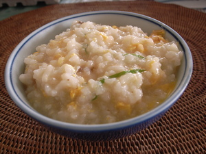

ⲟⲟⲩϣ S, ⲱⲟⲩϣ B nn m, gruel of bread or lentils, cf بوش (ⲡⲱⲟⲩϣ): Miss 4 529 S = C 89 48 B cooked him a little ⲟ. ϩⲙⲡⲟⲉⲓⲕ ⲉⲧⲙⲙⲁⲩ ἀθήρα = MG 17 560 ثريد = Va ar 172 29 بوش, C 89 96 B cooked for them ⲱ. = MG 17 472 = Va ar 172 56 بوش with gloss دشيش قمح pottage of crushed corn & oil (Dozy), BMOr 8775 123, P 54 127 B ⲡⲓⲱ. عصيد (cf P 44 85 ⲁⲗⲉⲩⲣⲟⲡⲓⲕⲧⲟⲛ ﻋ׳), PMéd 318 S flour & grapes ⲡⲉⲥⲧⲟⲩ ⲛⲟ., ShC 73 212 S ⲗⲁϩⲙⲉⲥ, ⲟⲩⲟⲟⲧⲉ ⲏ ⲟ., cf ib 73 ⲟⲩⲟⲟⲧⲉ ⲏ ⲁⲑⲁⲣⲁⲛ, MG 25 267 B ⲱ. ⲛⲥⲟⲩⲟ ⲉϥⲛⲟⲧⲉⲙ cooked in water.
(noun masculine)
food
gruel of bread or lentils

complete
257a
533a
ⲱⲟⲩϣ B v ⲟⲟⲩϣ.